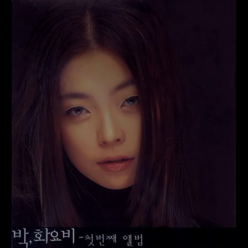

안녕하세요, 라보엠입니다.
오늘은 박화요비의 대표 곡 중 하나인 그런 일은’을 소개하려 합니다. 이 곡은 박화요비가 2000년 발매한 데뷔 앨범 [My All]에 수록된 발라드로, 국내 R&B의 대표주자로서의 입지를 단숨에 다진 작품입니다. 박정현과 함께 한국 여성 R&B의 정점을 이룬 박화요비의 독특한 음색과 감성적인 표현력이 돋보이는 곡으로, 지금까지도 많은 이들에게 사랑받고 있습니다.
박화요비의 음색과 감성

‘그런 일은’은 이별을 앞둔 연인의 마음을 섬세하게 담아낸 곡입니다. 박화요비의 풍부한 감성과 뛰어난 가창력이 돋보이며, 곡 전체에 흐르는 애절함과 진심이 듣는 이의 마음을 움직입니다. 특히 데뷔 앨범이지만 신인답지 않은 성숙한 감정 표현과 기교가 인상적입니다. 초판 버전에서는 담백하고 스트레이트한 창법이, 재발매 버전에서는 R&B적 기교와 섬세한 가성이 더해져 비교 청취의 묘미도 있습니다.
곡은 절제된 멜로디와 감성적인 피아노, 그리고 박화요비 특유의 진한 감정이 어우러져 깊은 여운을 남깁니다. 후렴구에서의 감정의 고조와, 다시금 담담해지는 마무리는 듣는 이에게 오랜 시간 잊혀지지 않는 감정을 전달합니다. 박화요비의 목소리는 애절함과 동시에 희망을 잃지 않는 든든함이 느껴져, 이별의 순간을 견딜 수 있는 힘이 되어줍니다.
제가 박화요비의 목소리에 꽂힌 순간은 MBC 우리 결혼했어요에서 환희와 텐트 앞에서 키보드 하나만 두고 Loving you 를 나지막히 불렀던 장면이었는데요, 화려한 기교를 부리지도 않고 터지는 창법도 아니었지만 그 분위기와 노래의 순간을 가장 빛나게 기억하고 있습니다.
가사 속에 담긴 이별의 순간
너무나 멀어보여요
이렇게 가까이 있는데도
언제나 나를 안아주던 따스한
인사도 잊은건가요
내가 뭘 잘못했나요 혹시 나 미워졌나요
아니죠 떠나려는건 아니죠
그런일은 절대로
없을거라 나는 믿을게요
오늘은 안돼요 내 사랑이 이대로는
이별을 감당하긴 어려운걸요
많은 약속을 다 지울순 없잖아요
아직도 해드릴게 참 많이 있는데
얼마쯤 걸어가다가
한번은 날 뒤돌아 봐줄거죠
그리곤 다시 예전처럼
다가와 웃으며 안아줄거죠
정말 날 좋아했는데 정말 날 아꼈었는데
아니죠 그대를 다시 못보는
그런일은 절대로 없는거죠 나는 믿을게요
오늘은 안돼요 내 사랑이 이대로는
이별을 감당하긴 어려운걸요
많은 약속을 다 지울순 없잖아요
아직도 해드릴게 참 많은걸요
내일 아침엔 더 힘들어질거예요
어쩌면 며칠밤을 지새우겠죠
언제까지나 곁에 있기로 했잖아요
그대가 아니라면 난 혼자인걸요
가사는 “너무나 멀어보여요 이렇게 가까이 있는데도”로 시작해, 사랑하는 이와의 거리감과 이별을 받아들이기 힘든 마음을 솔직하게 드러냅니다. “내가 뭘 잘못했나요 혹시 나 미워졌나요”라는 질문은 누구나 한 번쯤 느껴본 적 있는 불안과 두려움을 대변합니다. “그런 일은 절대로 없을 거라 나는 믿을게요”라는 후렴구는 이별을 부정하고 싶은 마음을 애절하게 담아냅니다.
이별을 감당하기 힘든 순간, 많은 약속을 지울 수 없는 마음, 그리고 아직 해주고 싶은 말이 많다는 고백이 가슴을 저미게 합니다. “내일 아침엔 더 힘들어질 거예요 어쩌면 며칠밤을 지새우겠죠”라는 구절은 이별의 아픔이 일상에 스며드는 과정을 섬세하게 그려냅니다.
시간이 지나도 변치 않는 명곡의 위력
그런 일은은 발매된 지 20년이 넘은 지금까지도 많은 커버 영상과 추억의 플레이리스트에 꾸준히 등장해 왔습니다. 박화요비의 음색과 감성이 담긴 이 곡은, 이별의 순간을 겪는 모든 이에게 공감과 위로를 전합니다. 최근에는 레드 벨벳 웬디와 같은 뮤지션에 의해 커버되며, 새로운 세대에게도 사랑받고 있습니다.
맺음말
박화요비의 그런 일은은 이별의 아픔과 미련, 그리고 아직 남아 있는 사랑을 모두 담아낸 곡입니다. 듣는 이마다 자신의 이야기를 떠올리게 하는 이 곡은, 박화요비의 음악적 역량과 감성적 깊이를 여실히 보여줍니다. 오늘 하루, 그런 일은을 들으며 지나간 사랑과 지금의 마음을 다시 한 번 돌아보는 시간을 가져보는 건 어떨까요? 이 곡이 여러분의 하루에 따뜻한 위로와 공감이 되어주길 바랍니다.
박화요비의 그런 일은은 시간이 지나도 변치 않는 명곡으로, 앞으로도 많은 이들의 마음을 움직일 것입니다.